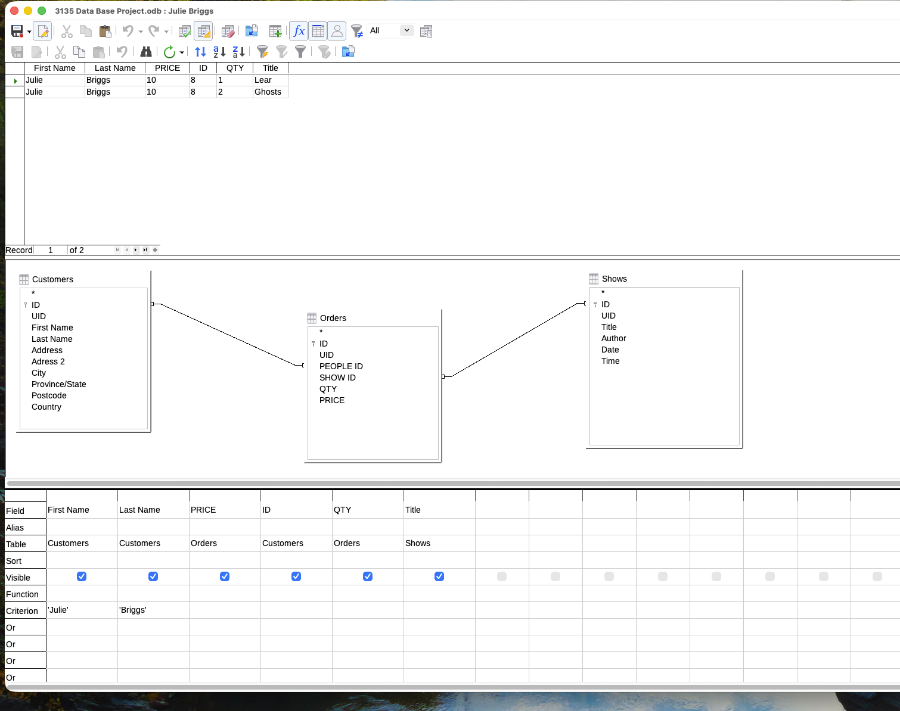

Database Project
Overview
This project demonstrates how a relational database can be used to store and analyze
ticket purchasing data. The database was created using LibreOffice Base and structured
to model real-world relationships between customers, orders, and shows.
Process (Proof of Work)
The database was created and tested using the following steps:
-
A new LibreOffice Base database file was created.
-
Three tables were uploaded with all of the raw data from eclass:
- Customers – stores customer information such as first and last name
- Orders – stores ticket purchases including price and quantity
- Shows – stores show details such as title
-
Relationships were created so that each order is linked to a customer and a show.
-
The provided data was entered into the tables.
-
A query was created to filter for Julie Briggs and display all of her ticket purchases.
-
The total amount paid was calculated by multiplying price by quantity for each order
and summing the results.
Query Evidence
The screenshot below shows the query results for Julie Briggs. It displays two orders:
one ticket priced at $10 and two tickets priced at $10 each.

Working Files
The LibreOffice Base database file used for this project is included below:
Final Answer
How much has Julie Briggs paid for her tickets?
$30